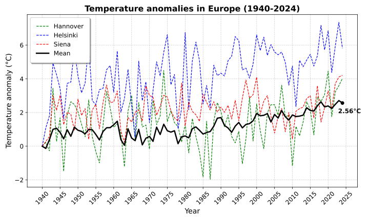
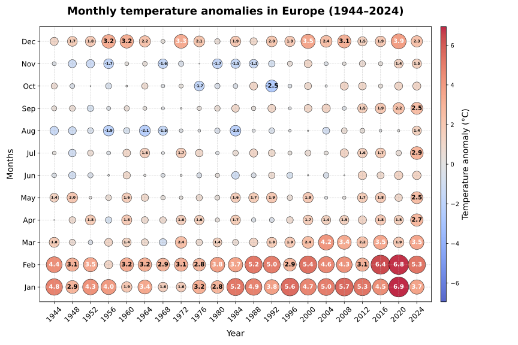
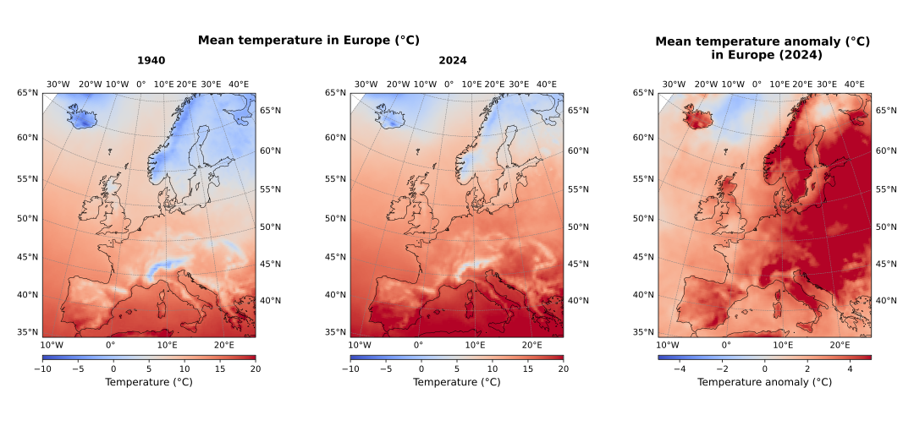

Analysis of the 2m air temperature data from the Copernicus Climate Data Store (CDS)
The goal of this project is to analyse the 2m air temperature data and visualize it in different ways, to highlight patterns and trends. Various types of plots are used, making it easier to understand temperature changes over time and across different areas.
I used the 2m air temperature data from the
ERA5 Reanalysis dataset
provided by the Copernicus Climate Data Store (CDS). ERA5 is a global climate reanalysis dataset that provides hourly estimates of atmospheric variables, including the 2m air temperature.
The following plots summarize the main results of the project. You can view the code in the Code section, and you can download the full project
from Github to experiment and make your modifications.
Line plot of the temperature anomalies in Europe between 1940 and 2024
First, temperature anomalies were calculated as the difference between the average European temperature for each year and month relative to the baseline year 1940.
Moreover, out of curiosity, I chose to include the temperature anomalies of three different cities, Hannover, Helsinki, and Siena, as these are places where I’ve lived the longest, adding a personal touch to the project.

The plot clearly shows how the effects of climate change are strongest in the Arctic region, with Helsinki showing the highest increase. In contrast, Hannover and Siena follow the European average more closely. In 2024, the mean temperature anomaly across Europe reached 2.56 °C, almost 1°C more than the mean temperature anomaly across the whole world.
Scatter plot of the monthly temperature anomalies in Europe between 1940 and 2024
Secondly, the mean monthly temperature anomalies in Europe relative to the baseline 1940 have been visualized in a scatter plot. Each bubble represents the magnitude of the temperature anomaly,
with both size and color emphasizing it, making it easier to spot the most extreme ones.

The plot shows that the colder months, December, January, February, and March, are the most affected by climate change. This reflects the broader trend where colder regions or seasons tend to warm faster than already warm ones, similar to how the Arctic is warming more
rapidly than the global average mentioned in the previous section. The highest anomaly was 6.9°C in January 2020, followed by 6.8°C in February 2020.
Animation of the scatter plot
For completeness, I added an animation of the previous scatter plot, including all the years between 1940 and 2024.
This animation gives a more complete picture of how the monthly temperature anomalies evolved over time. The animation shows the data in 10-year intervals, with each frame displaying a decade of temperature anomalies. It's interesting to see how the
bubbles gradually get redder and larger as the years pass, visually supporting the trend observed earlier, that Europe is getting warmer fast, and the anomalies are becoming more extreme, especially in the colder months.
Temperature map plot of the temperature anomalies in Europe between 1940 and 2024
The mean yearly temperatures and temperature anomalies across Europe have been visualized, with each point representing the temperature or anomaly relative to 1940 at a specific location.

The changes between the 1940 and 2024 maps are clearly visible, as in 2024, many of the blue-shaded regions from 1940 have become much lighter. This difference is further highlighted in the temperature anomaly map, which shows which regions are being
affected the most. As expected, colder and more northern areas, such as the Nordic countries, the Baltic states, Iceland, and the Alps, show some of the strongest warming effects, consistent with broader climate change patterns
mentioned previously. However, it's not just the North: Other regions like Italy, Eastern Europe and parts of Central Europe also show considerable warming, highlighting that the impacts of climate change are widespread and not confined to any specific region.
Temperature map animation of the yearly temperature anomalies in Europe between 1940 and 2024
Lastly, I animated through the years the mean yearly temperature anomalies across Europe.
This animation also gives a good overview of how temperature anomalies in Europe have changed over the years. As the previous plots already hinted, it is interesting to see how the map gradually turns redder, emphasizing the rising of temperatures across Europe.
Line plot of the temperature anomalies in Europe between 1940 and 2024
Install necessary packages and initialize data
import xarray as xr
import matplotlib.pyplot as plt
file = 'data_t2m_tot.nc' #2m air temperature
ds = xr.open_dataset(file, chunks = {'valid_time' : 50}) #chunks for faster computation
temp = ds.t2m
Display the data in a line plot. This plot shows the mean yearly temperature anomalies in Europe. Moreover, I chose to include the temperature anomalies of three different cities, Hannover, Helsinki, and Siena, represented by the colored lines.
Mostly out of curiosity, as these are places where I’ve lived the longest, adding a personal touch to the project.
Display the data in a scatter plot.
This scatter (bubble) plot shows the mean monthly temperature anomalies in Europe, relative to the baseline 1940, with both the color and size of the bubbles indicating the magnitude of the anomaly. As is common in climate data visualization,
warmer temperatures compared to the 1940 baseline appear in shades of red, while colder ones are shown in blue shades. The size of each bubble also shows the strength of this deviation, making it easy to spot extreme anomalies.
plt.figure(figsize=(12, 8))
X, Y = np.meshgrid(sample_years, months)
vmax_plt = np.max(np.abs(anom_month_plt))
norm = colors.TwoSlopeNorm(vmin=-vmax_plt, vcenter=0, vmax=vmax_plt)
bubble_size = np.abs(anom_month_plt) * 160 #to enhance the bubble size, otherwise too small
sc = plt.scatter(
X.flatten(), Y.flatten(),
s=bubble_size.flatten(),
c=anom_month_plt.flatten(),
norm=norm,
cmap='coolwarm',
alpha=0.85,
edgecolors='black',
linewidth=0.6)
for i in range(len(months)):
for j in range(len(sample_years)):
val = anom_month_plt[i, j]
if bubble_size[i, j] > 210:
color = "white" if abs(val) > 3.3 else "black"
size = 6 if abs(val) < 2.5 else 10
plt.text(X[i, j], Y[i, j], f"{val:.1f}", fontsize=size, ha='center', va='center', color=color, fontweight='bold')
#add the respective anomaly values to the bubbles
cbar = plt.colorbar(sc, aspect=50, pad=0.02)
cbar.set_label("Temperature anomaly (°C)", fontsize=14)
plt.xticks(sample_years, sample_years, fontsize=12, rotation=45)
plt.yticks(range(len(months)), ['Jan', 'Feb', 'Mar', 'Apr', 'May', 'Jun', 'Jul', 'Aug', 'Sep', 'Oct', 'Nov', 'Dec'], fontsize=12)
plt.xlabel("Year", fontsize=14, labelpad=10)
plt.ylabel("Months", fontsize=14, labelpad=10)
plt.title("Monthly temperature anomalies in Europe (1944–2024)", fontsize=18, fontweight='bold', pad=20)
plt.grid(True, linestyle='--', alpha=0.5)
plt.margins(x=0.04, y=0.06)
plt.tight_layout()
plt.savefig('bubbles_eu.svg')
plt.show()
Scatter animation of the monthly temperature anomalies in Europe between 1940 and 2024
Install needed packages and define key parameters.
import matplotlib.animation as animation
ini = 0
yrs_frame = 10
fin = ini + yrs_frame
years_dyn = yrs[ini:fin]
anom_month_dyn = anom_month_vals[:, ini:fin]
Animate the scatter plot.
fig, ax = plt.subplots(figsize = (10,6))
X, Y = np.meshgrid(years_dyn, months)
vmax = np.max(np.abs(anom_month_dyn))
norm = colors.TwoSlopeNorm(vmin=-vmax, vcenter=0, vmax=vmax)
bubble_size = np.abs(anom_month_dyn) * 160
sc = ax.scatter(
X.flatten(), Y.flatten(),
s=bubble_size.flatten(),
c=anom_month_dyn.flatten(),
norm=norm,
cmap='coolwarm',
alpha=0.85,
edgecolors='black',
linewidth=0.6)
#add aesthetics
ax.grid(True, linestyle='--', alpha=0.5)
ax.margins(x=0.07, y=0.1)
#axes & title
cbar = fig.colorbar(sc, ax = ax, aspect=50, pad=0.02)
cbar.set_label("Temperature anomaly (°C)", fontsize=14)
ax.set_xticks(years_dyn)
ax.set_xticklabels(years_dyn, fontsize=12, rotation=45)
ax.set_yticks(range(len(months)))
ax.set_yticklabels(['Jan', 'Feb', 'Mar', 'Apr', 'May', 'Jun', 'Jul', 'Aug', 'Sep', 'Oct', 'Nov', 'Dec'], fontsize=12)
ax.set_xlabel("Year", fontsize=14, labelpad=10)
ax.set_ylabel("Months", fontsize=14, labelpad=10)
ax.set_title("Monthly temperature anomalies in Europe relative to 1940 (1944–2024)", fontsize=18, fontweight='bold', pad=20)
#define the update function
def update(frame):
ax.clear() #clear the plot after each frame to avoid overlapping drawing
start_idx = frame
end_idx = frame + yrs_frame
#update the years and displayed values
years_dyn = yrs[start_idx:end_idx]
anom_month_dyn = anom_month_vals[:, start_idx:end_idx]
#update the mesh and the bubble size to avoid any errors
X, Y = np.meshgrid(years_dyn, months)
bubble_size = np.abs(anom_month_dyn) * 160
#update the scatter plot
sc = ax.scatter(
X.flatten(), Y.flatten(),
s=bubble_size.flatten(),
c=anom_month_dyn.flatten(),
norm=norm,
cmap='coolwarm',
alpha=0.85,
edgecolors='black',
linewidth=0.6)
#axis & title
ax.set_xticks(years_dyn)
ax.set_xticklabels(years_dyn, fontsize=12, rotation=45)
ax.set_yticks(range(len(months)))
ax.set_yticklabels(['Jan', 'Feb', 'Mar', 'Apr', 'May', 'Jun', 'Jul', 'Aug', 'Sep', 'Oct', 'Nov', 'Dec'], fontsize=12)
ax.set_xlabel("Year", fontsize=14, labelpad=10)
ax.set_ylabel("Months", fontsize=14, labelpad=10)
ax.set_title(f"Monthly temperature anomalies in Europe ({yrs[start_idx]}–{yrs[end_idx-1]})", fontsize = 18, fontweight = 'bold', pad = 20)
#aesthetics
#update the displayed values of the anomalies
for i in range(len(months)):
for j in range(len(years_dyn)):
val = anom_month_dyn[i, j]
if bubble_size[i, j] > 210:
color = "white" if abs(val) > 3.3 else "black"
size = 6 if abs(val) < 2.5 else 10
ax.text(X[i, j], Y[i, j], f"{val:.1f}", fontsize=size, ha='center', va='center', color=color, fontweight='bold')
ax.grid(True, linestyle='--', alpha=0.5)
ax.margins(x=0.07, y=0.1)
return sc
ani_frames = len(yrs) - (yrs_frame - 1) # Number of years from 1941 to 2024
ani = animation.FuncAnimation(fig, update, frames=ani_frames, interval=140, blit=False)
ani.save('bubble_ani.mp4')
plt.tight_layout()
plt.show()
Temperature plot of the yearly temperature anomalies in Europe between 1940 and 2024
Install needed packages and define key parameters and functions.
import cartopy.crs as ccrs
Compute the temperature anomalies in the coordinate lattice
These temperature maps show the mean yearly temperatures and temperature anomalies across Europe, with each point representing the temperature or anomaly relative to 1940
at a specific location. The first two plots display the actual temperatures for the years 1940 and 2024, where, as usual, red indicates warmer temperatures and blue indicates colder
ones. The third plot shows the temperature anomaly in 2024 relative to 1940, with red areas highlighting regions that with a higher anomaly.